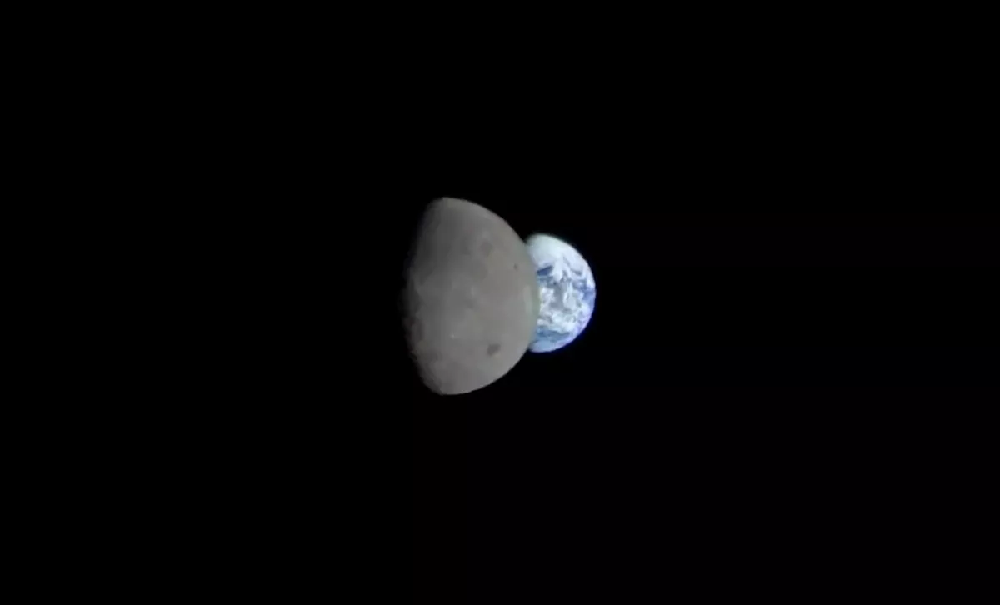
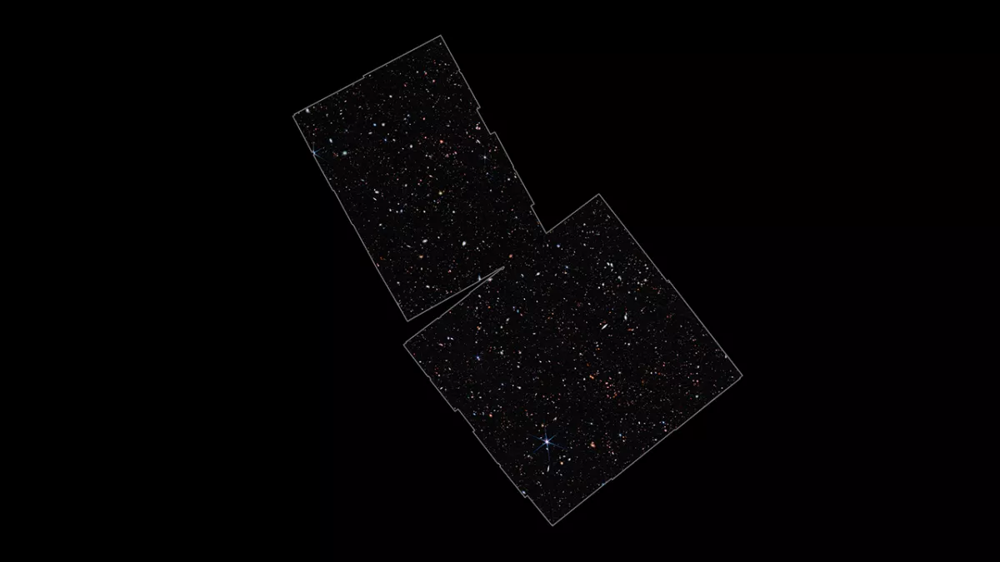

Space photos: The most amazing images
this week!
By Doris Elin Urrutia last updated 3 days ago
Artemis 1 is days away from its return to Earth,
the world's largest radio telescope is finally
under construction and the moon eclipses Mars.
These are some of this week's top stories.



The launch of the Artemis 1 Space Launch System rocket as seen from the press site at
Kennedy Space Center. (Image credit: Josh Dinner)
As Orion closes the gap between the moon and Earth ahead of its Pacific
Ocean splashdown on Sunday (Dec. 11), we're looking back at the epic
launch that got us here.
Tensions were high in the hours leading up to last month's Artemis 1 launch.
Spectators began gathering at NASA's Kennedy Space Center (KSC) and
across Florida's Space Coast early in the evening of Nov. 15 in anticipation
of the late-night launch attempt, and a few off-nominal occurrences during
countdown spurred some doubts about whether the rocket would get off the
ground at all.
While NASA's new Space Launch System (SLS) rocket sat fueled on the launch
pad, ready to launch the Orion spacecraft to the moon, connection issues at a
ground tracking station and a leaky valve on the Mobile Launch Platform (MLP)
put a hold on the clock and began pushing the liftoff time into the night's
two-hour window. NASA officials addressed the latter by sending a "Red Crew"
to the launch pad to physically fix the malfunctioning valve, which made
tensions even higher.

Vehicles with members of the Red Crew are seen as they arrive at Launch Pad
39B to make sure all connections and valves remain tight, Tuesday, Nov. 15, 2022, NASA’s
Kennedy Space Center in Florida. (Image credit: NASA/Joel Kowsky)
.gif)